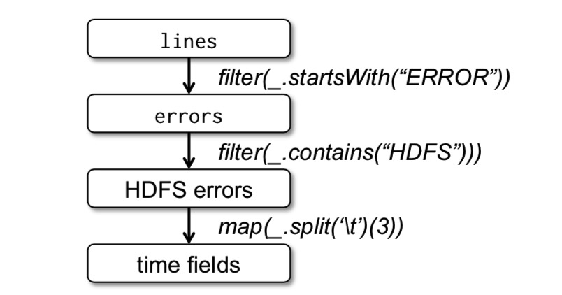
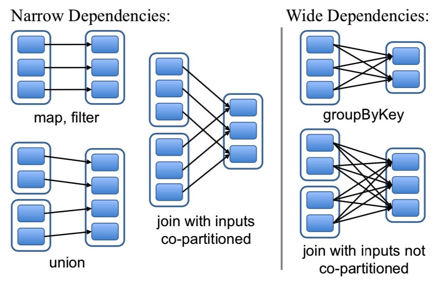
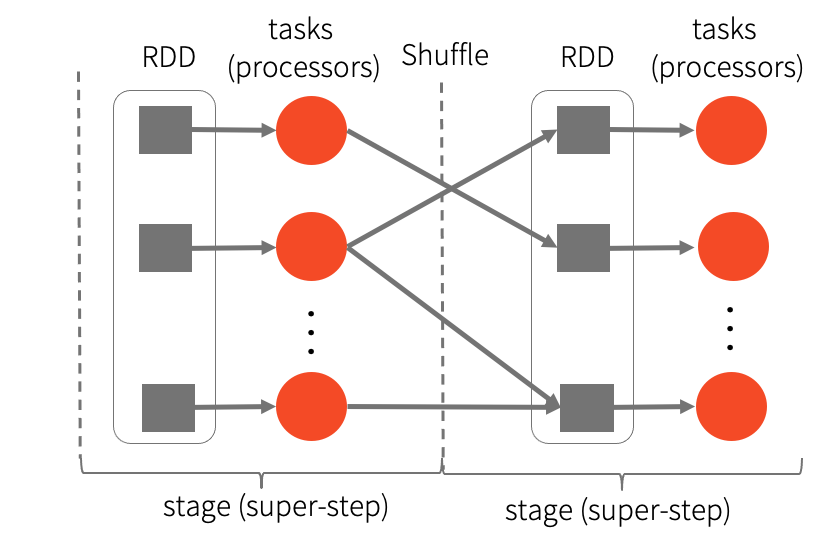
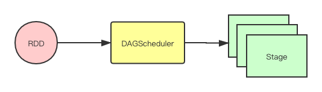
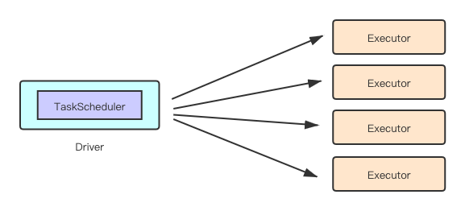

RDD(Resilient Distributed Datasets,弹性分布式数据集)是一个分布式的内存抽象，让程序设计员在高效容错的条件下，在大规模的集群里执行基于内存的计算。
MapReduce: RDD的背景
在RDD之前的计算框架，不善于处理2种应用：迭代式的算法（iterative algorithms）和交互式的数据挖掘工具（ineractive data mining tools）。
迭代式的算法: 下一阶段的计算会频繁使用到之前的数据， 例如PageRank，K-means集群算法，逻辑回归算法。
交互式的程序：程序运行过程中依赖用户的输入来确定下一步的计算。
RDD之前的计算框架，没有很好地复用计算阶段之间的数据。例如，MapReduce框架，计算完一个阶段的数据，将结果输出到外部的静态储存系统，例如，分布式文件系统，这造成数据复制，磁盘I/O，序列化的开销，并且占据了程序运行的大部分时间。而且，这些框架的容错，是通过不同机器之间同步数据/更新日志来实现的。对于数据密集型的应用，这些数据同步的操作使用更多的网络带宽，速度远慢于内存读取。
Resilient Distributed Datasets
RDD是一个只读的，分片的记录集合。RDD只能通过(1)静态存储中的数据（2）其他RDD来创建。创建RDD的操作被称为Transformation，例如map, filter。
org.apache.spark.rdd/RDD.Scala中描述, RDD有以下特性：
- 一个partition列表，是数据集的一部分。
- 一个其他RDD的依赖列表
- 一个函数，用来计算partition的分片。
- partitioner，返回RDD是否hash/范围分片的元数据（可选）
- 列出Partition p能快速访问的节点，基于数据局部性（可选）
RDD的操作
下面的代码中，lines创建了一个来自HDFS文件的RDD，errors是lines创建的RDD。
1 | lines = spark.textFile("hdfs://...") |

RDD的操作分为Transformation和Action，Transformation是数据的转换，是延时执行的，只有遇到后面的Action操作才会真正执行。
RDD的依赖关系窄依赖与宽依赖
论文中，对RDD对象的接口的描述：
| 操作 | 意义 |
|---|---|
| partitions() | 返回Partition对象列表 |
| preferredLocations(p) | 列出Partition p能快速访问的节点，基于数据局部性 |
| dependencies() | 返回依赖列表 |
| iterator(p, parentIters) | 计算partition p的父partition |
| partitioner() | 返回RDD是否hash/范围分片的元数据 |

如果父RDD的分区最多只被一个子RDD使用，这就是窄依赖（narrow dependencies）；如果父RDD的分区最多个子RDD使用，这就是宽依赖（wide dependencies）。
窄依赖的RDD，支持同一个节点内的数据的流水线执行，不需要数据在节点之间的传输。与MapReduce比较，节省了数据传输的花销。而宽依赖的RDD，需要多个父RDD的数据，需要多个节点之间数据的shuffle，来传输数据。
第二，窄依赖的RDD，节点故障后的恢复更为高效，只需要重新计算丢失的RDD数据。而宽依赖的RDD，一个节点故障后，需要从宽依赖的继承图中的祖先节点，开始重新计算。
Spark任务调度
BSP模型
Apache Spark的任务调度是一个BSP(Bulk Synchronous Parallel，整体同步并行计算模型)。在每个stage之间的转换，会有一个屏障（barrier），由协调者（coordinator）确定所有节点都已经完成了上一个Stage的计算，然后coordinator通知下游节点去进行下一个Stage的计算，这属于拉（pull）模型，由消费者主动向消息中间件拉取消息。

BSP有2个好处：
1.使故障恢复更为迅速。当某个stage出现故障时，只需要恢复到上一个stage再开始计算，不需要重新计算。
2.节省同时调度全部节点的开销，支持更大的数据处理吞吐量。每个节点完成计算的时间不一样，coordinator不需要同时调度所有节点。另外，执行较快的节点，可以执行其他慢节点的任务，资源不足的情况下，一个节点可以处理所有的stage。
而BSP的缺点是，因为需要调度，相比apache flink，处理的数据的延时不能降到很低。
任务调度
RDD之间的依赖关系会生成一个DAG （Directed acyclic graph，有向无环图）。
Spark的调度大体可以分成如下两部分：
- DAG 调度：对RDD进行转换，生成按stage组织的任务集合（Task set）。

2.Task调度：按照stage在分布式环境调度任务。

DAG调度
在本阶段内，DAG调度器将完整的DAG划分为不同的Stage，生成可运行的Task。
Stage划分根据rdd之间的依赖关系类型进行，即当判断相邻两级RDD间的依赖类型为窄依赖时，则将它们划分为同一Stage，否则分成不同的Stage。
Task调度
Task调度
在本阶段内，Task调度器根据现有Executor资源分布情况，按照Stage分发Task至Executor上执行。
Executor启动时，将自身的资源情况（cpu，内存）通过rpc接口在Driver节点进行注册，Task调度时，调度器在注册结果中选择合适的Executor进行任务加载。选择的过程主要参考两方面，即Executor空闲情况和本地性（Locality）。前者比较好理解，以下重点对后者进行说明。
由于数据在进程/节点间传输的开销通常难以忽视，因而为了提升性能，需要将计算逻辑（即Task）尽可能贴近数据，这就是本地性（Locality)。在Spark中，按照下列不同级别本地性优先原则进行Executor选择：
- 本地进程优先（PROCESS_LOCAL）
- 节点优先（PROCESS_LOCAL）
- 无优先（NO_PREF）
- 机架优先（RACK_LOCAL）
当上一级的本地性不能被满足时，如目标Executor已经没有空闲资源，调度有两种选择，即将本地性降级或等待Executor变为可用，可以通过配置各级别的等待时间来控制。
当一次调度无法为所有的Task分配合适的Executor时，调度器会通过后台线程定时进行延时调度，直到所有任务得到分配。
Task在Executor上完成执行后，通过rpc通知Driver，将该任务状态置为完成。当该Stage对应的所有任务均执行完成后，方才调度下一Stage，直至任务最终完成。
参考文献
- Resilient Distributed Datasets: A Fault-Tolerant Abstraction for In-Memory Cluster Computing
- Drizzle: Fast and Adaptable Stream Processing at Scale
我的公众号：lyp分享的地方
我的知乎专栏: https://zhuanlan.zhihu.com/c_1275466546035740672
我的博客：www.liangyaopei.com
Github Page: https://liangyaopei.github.io/